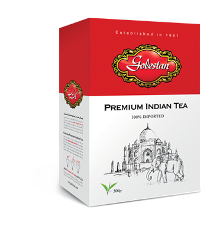
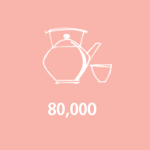
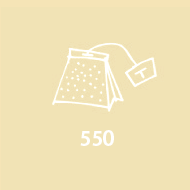
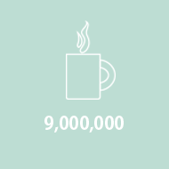
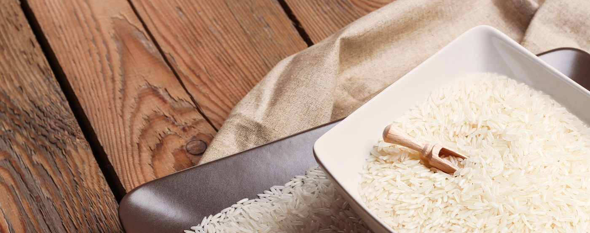
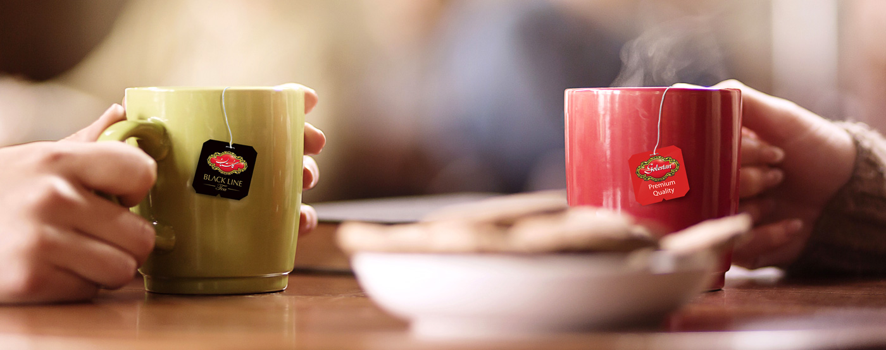
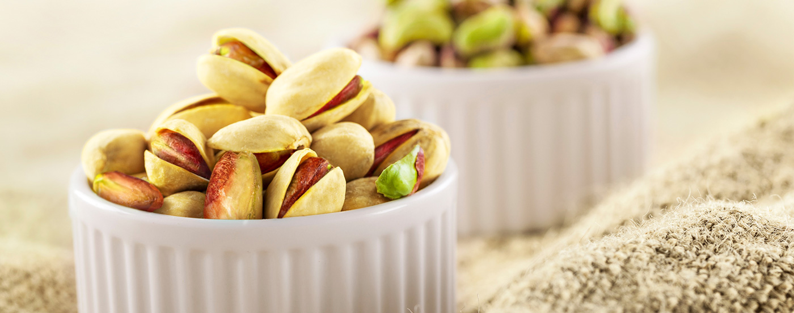

Golestan Tea
Read More..
About Golestan
Employees

Retailers

Products

Consumers

Rice
Iranian Food base
The best quality rice in the world is Iranian rice, and the best types of Iranian rice are Tarom and Hashemi. These rices are harvested from the best rice fields of Mazandaran, and after quality control in specialized laboratories in Golestan, they enter the packaging cycle and are offered to the market in different weights. The unique aroma and taste of Golestan rice cannot be compared to any other rice. With Golestan, the quality of life is higher than ever because Golestan customers deserve the best.

Tea
A history that dates back a lifetime
The best quality Tea in the world is Iranian tea, and the best types of Iranian tea are gilan and golestan. These teas are harvested from the best tea fields of Mazandaran, and after quality control in specialized laboratories in Golestan, they enter the packaging cycle and are offered to the market in different weights. The unique aroma and taste of Golestan tea cannot be compared to any other tea. With Golestan, the quality of life is higher than ever because Golestan customers deserve the best.

Pistashio
Funny nuts
The extraordinary properties of pistachios are well-known. Pistachios are considered a source of vitamins and minerals, a powerful blood pump, and a sedative for the heart and nerves.
The best quality pistachios in the world is Iranian pistachios, and the best types of Iranian pistachios are Tarom and Hashemi. These pistachioss are harvested from the best pistachios fields of Mazandaran, and after quality control in specialized laboratories in Golestan, they enter the packaging cycle and are offered to the market in different weights. The unique aroma and taste of Golestan pistachios cannot be compared to any other pistachios. With Golestan, the quality of life is higher than ever because Golestan customers deserve the best.
Golestan Company's Social Responsibilities
Golestan Social Responsibility
Mahdi Hospital
Golestan Company's Social Responsibilities
Businesses are powerful components of society, and the most successful, respected, and desirable businesses are those that do more than generate income; those that have come to use their experience and capabilities to solve problems in their community and environment. Golestan has a wide range of public service activities on its agenda in its social activities.
More InformationAll Right Reserved ShABBAK Company 2026-2026
Design By : Marjan Shabbak